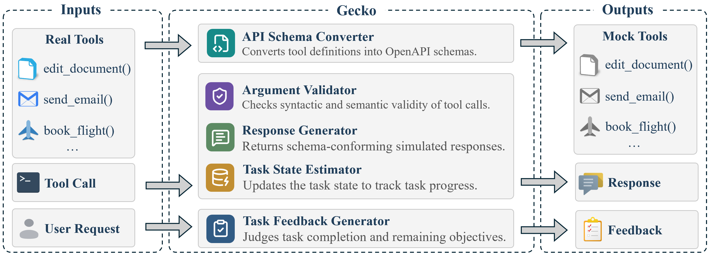
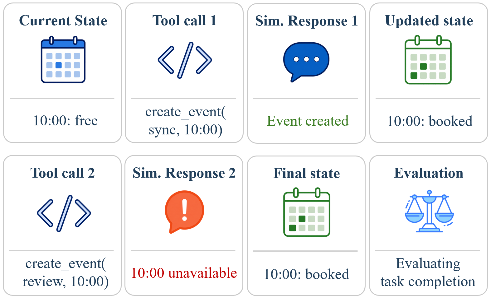
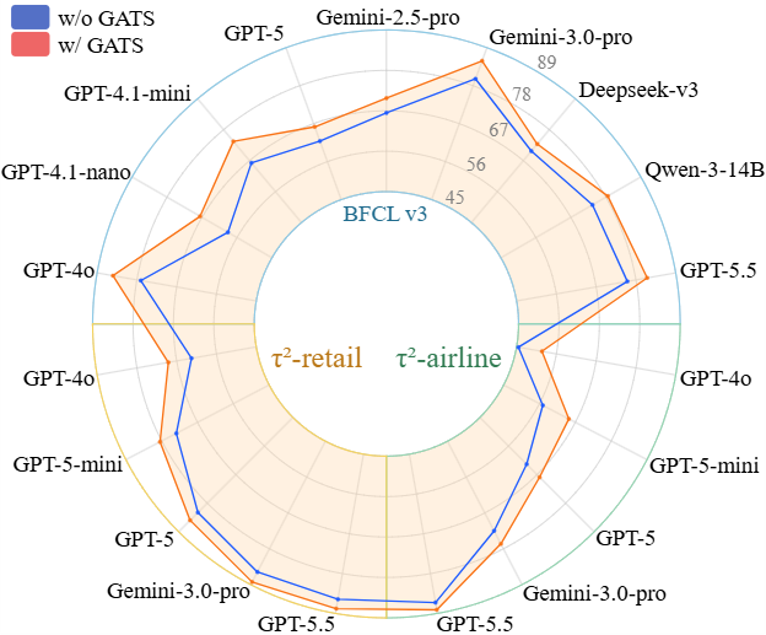
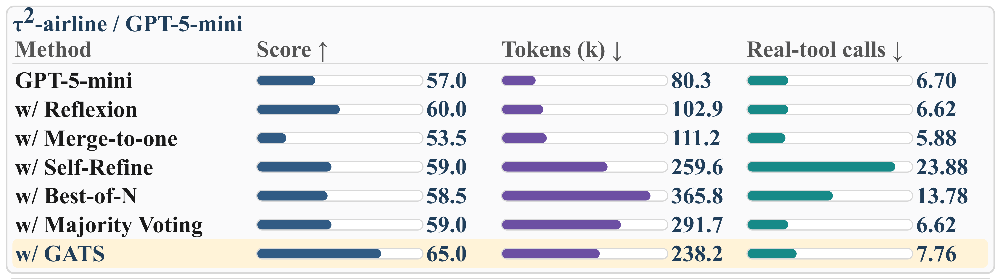
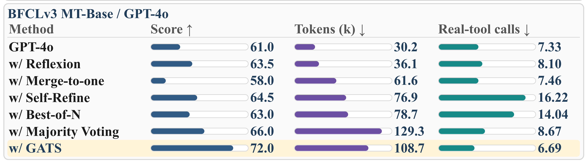

Real feedback helps
Tool-use agents often need execution feedback to fix wrong tools, malformed arguments, or incomplete plans.
Refine agent tool-use plans in stateful simulation before real execution, reducing real-tool trial-and-error while improving tool-call performance.
Gecko builds simulated tools from the available tool definitions. The planning agent uses them to try tool calls, receive feedback, and refine its plan before real execution. The refined plan then guides the real-tool agent when it calls the real tools.
Tool-use agents often need execution feedback to fix wrong tools, malformed arguments, or incomplete plans.
Repeated calls to real APIs can hit rate limits, add cost, or trigger irreversible side effects such as sending emails or placing orders.
Gecko validates calls, simulates schema-conforming responses, tracks task state, and judges whether the user objective is satisfied.

Task state records the cumulative effects of simulated tool calls, so Gecko can reject later calls that conflict with earlier effects and judge completion against the final state.

Load tool schemas, task context, and the current simulated state.
A planning LLM tries candidate tool-call trajectories with simulated tools.
Gecko updates task state, judges completion, and returns feedback if the task is not solved.
A solved simulated trajectory is passed as in-context guidance to the real-tool agent.
Real execution results are synchronized back to Gecko for the next turn.

In this example, Gecko first catches an invalid tool argument, then detects that a seemingly valid trajectory leaves the file in the wrong directory. The final simulated trajectory is used as guidance for real-tool execution.
GATS consistently improves different planning LLMs on BFCLv3 and τ2-bench by refining tool calls in Gecko before real-tool execution.

Method comparison on BFCLv3. We select eight most important metrics from BFCL website. Overall accuracy is the average of average Non-live single turn, average Live single turn, and Multi-turn. GATS consistently improves various planning LLMs.
| Model | Overall Acc | Non-live single turn | Live single turn | Multi-turn | |||||
|---|---|---|---|---|---|---|---|---|---|
| simple | parallel | multiple | irrelevance | simple | multiple | irrelevance | base | ||
| State-of-the-art reference models | |||||||||
| ToolACE-2-8B | 73.12 | 88.00 | 92.50 | 92.50 | 95.41 | 70.93 | 79.01 | 84.80 | 49.00 |
| watt-tool-70B | 79.27 | 98.25 | 85.50 | 94.00 | 84.16 | 86.04 | 83.47 | 68.48 | 68.00 |
| xLAM-2-70b | 80.96 | 94.75 | 92.00 | 94.50 | 83.33 | 77.13 | 71.13 | 74.48 | 77.50 |
| Baseline models and our proposed method | |||||||||
| GPT-4.1-nano | 58.85 | 82.25 | 78.50 | 75.00 | 80.83 | 65.11 | 58.97 | 72.22 | 32.00 |
| +GATS | 67.59 | 93.25 | 88.50 | 95.00 | 81.25 | 77.13 | 69.80 | 80.38 | 37.50 |
| GPT-4.1-mini | 66.20 | 91.50 | 84.50 | 88.00 | 78.33 | 79.45 | 70.94 | 68.70 | 40.00 |
| +GATS | 73.84 | 96.25 | 88.00 | 95.50 | 84.58 | 84.49 | 74.54 | 80.83 | 50.50 |
| GPT-4o | 76.93 | 92.75 | 92.50 | 92.50 | 84.16 | 81.00 | 78.53 | 78.45 | 61.00 |
| +GATS | 84.62 | 96.50 | 95.00 | 95.50 | 95.83 | 84.10 | 81.01 | 93.42 | 72.00 |
| GPT-5-thinking | 61.94 | 78.00 | 84.00 | 76.00 | 92.91 | 61.62 | 57.45 | 89.70 | 33.50 |
| +GATS | 66.08 | 85.00 | 90.50 | 83.00 | 93.75 | 67.44 | 63.24 | 90.38 | 36.50 |
| Gemini-2.5-pro | 66.44 | 86.25 | 69.00 | 86.00 | 91.66 | 77.90 | 62.20 | 89.68 | 39.50 |
| +GATS | 70.44 | 92.25 | 75.00 | 89.00 | 92.50 | 80.62 | 67.99 | 91.83 | 44.00 |
| Gemini-3.0-pro-preview | 79.97 | 94.50 | 91.00 | 94.00 | 82.50 | 87.60 | 80.44 | 73.19 | 69.00 |
| +GATS | 85.19 | 97.00 | 93.00 | 95.50 | 94.17 | 85.93 | 82.34 | 89.59 | 73.50 |
| Deepseek-V3 | 70.40 | 97.00 | 92.00 | 94.00 | 80.41 | 86.04 | 79.48 | 72.56 | 41.00 |
| +GATS | 72.90 | 97.25 | 92.00 | 95.50 | 83.75 | 88.75 | 81.76 | 78.79 | 43.50 |
| Qwen-3-14B | 73.78 | 95.50 | 92.50 | 95.00 | 84.58 | 86.04 | 80.81 | 77.44 | 48.00 |
| +GATS | 78.60 | 96.75 | 93.50 | 95.00 | 92.50 | 87.59 | 83.00 | 91.50 | 54.00 |
Method comparison on τ2-bench. We report success rate under τ2-retail and τ2-airline subsets and average accuracy (Overall).
| Model | τ2-retail | τ2-airline | Overall |
|---|---|---|---|
| State-of-the-art reference models | |||
| Claude Opus 4 | 81.8% | 60.0% | 70.9% |
| Claude Sonnet 4 | 75.0% | 55.5% | 65.3% |
| Kimi-K2-Instruct | 70.6% | 56.5% | 63.6% |
| Baseline models and w/ GATS | |||
| GPT-4o | 62.9% | 45.5% | 54.2% |
| +GATS | 69.3% | 52.0% | 60.7% |
| GPT-5-mini | 73.5% | 57.0% | 65.3% |
| +GATS | 78.5% | 65.0% | 71.8% |
| GPT-5-thinking | 81.6% | 63.0% | 72.3% |
| +GATS | 84.6% | 68.0% | 76.3% |
| Gemini-3.0-pro-preview | 85.1% | 72.5% | 78.8% |
| +GATS | 88.2% | 76.5% | 82.3% |
GATS is compared with Reflexion, Merge-to-one, Self-Refine, Best-of-N, and Majority Voting. Real-tool calls count benchmark tool calls only; simulated Gecko calls are excluded.


Gecko can act as a verifier for tool-call data synthesis: given tasks, tool definitions, and tool-call sequences, it can simulate outcomes and return task-level feedback for filtering or correction. Gecko can also convert supervised tool-call datasets into reinforcement-learning environments: tool schemas define the action space, simulated execution gives observations, and judge-based checklist evaluation provides reward signals for offline or online training.
Gecko is not a high-fidelity replacement for arbitrary real tools. It is most useful when tool schemas and task context provide enough information for informative simulation. For hidden external databases, hybrid execution can use real read-only tools while simulating state-changing actions.
@misc{zhang2026gecko,
title={Gecko: A Simulation Environment with Stateful Feedback for Refining Agent Tool Calls},
author={Zeyu Zhang and Guohao Li and Zhenchang Xing and Alexandros Apostolopoulos and Yu Lin Lee and Liang Zheng},
year={2026},
eprint={2602.19218},
archivePrefix={arXiv},
primaryClass={cs.SE},
url={https://arxiv.org/abs/2602.19218},
}